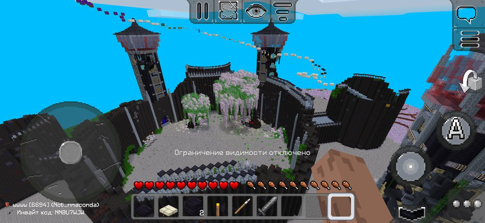
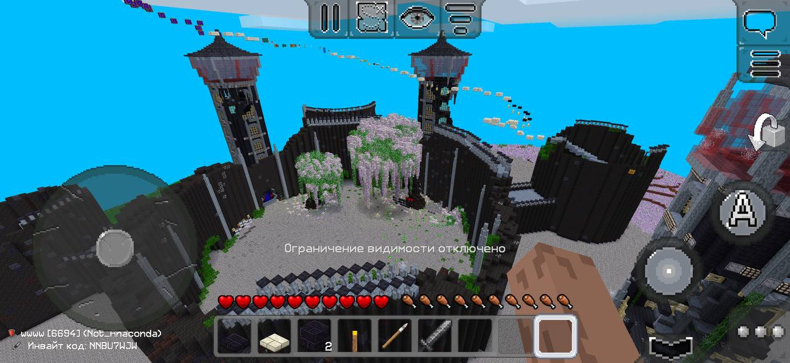
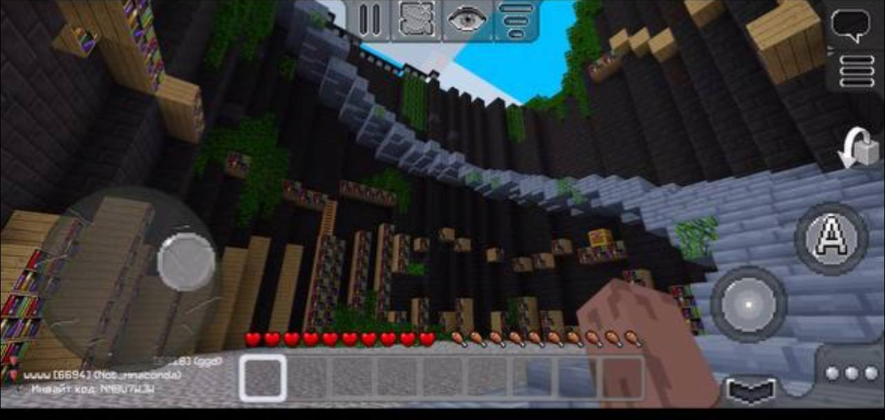
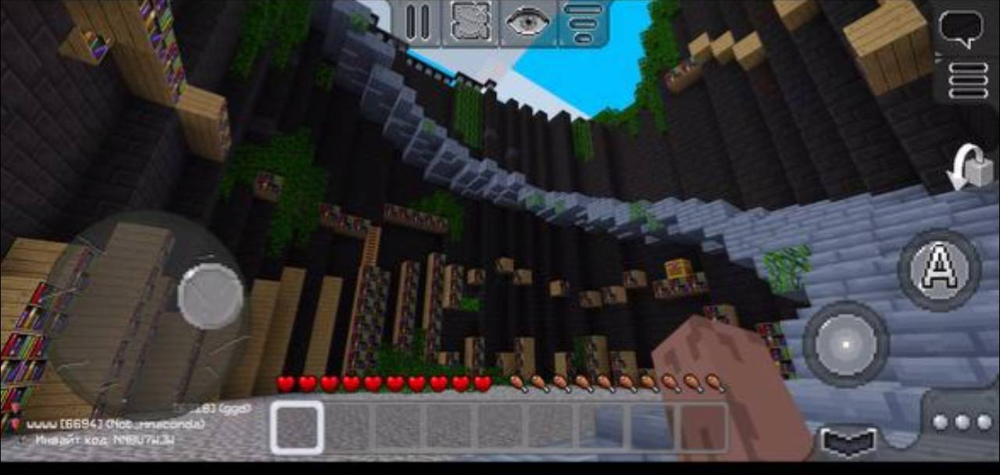
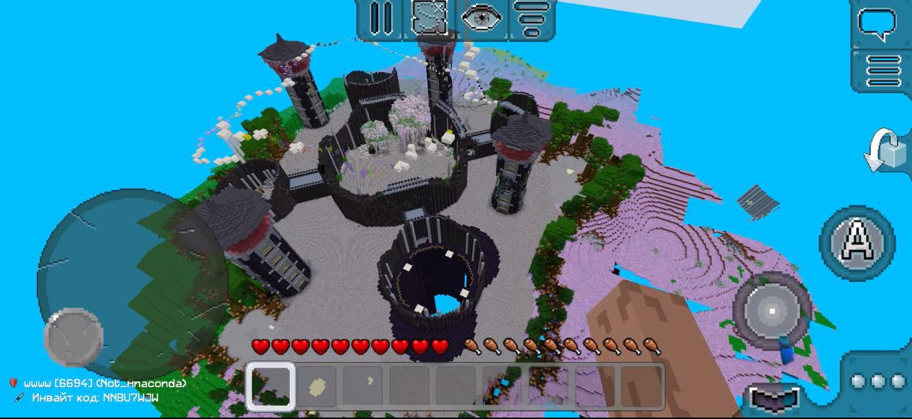
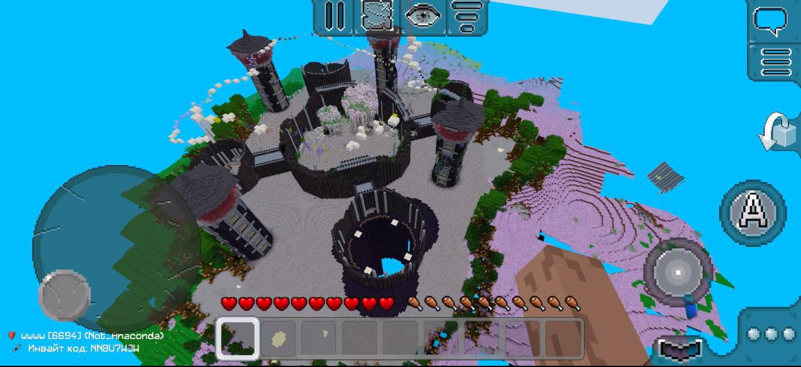
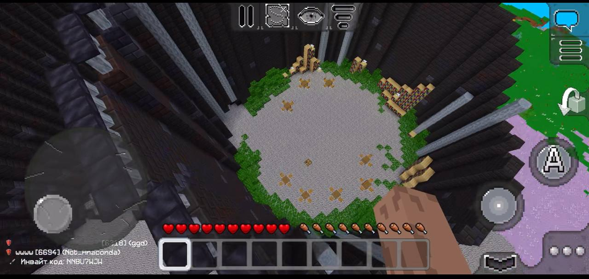
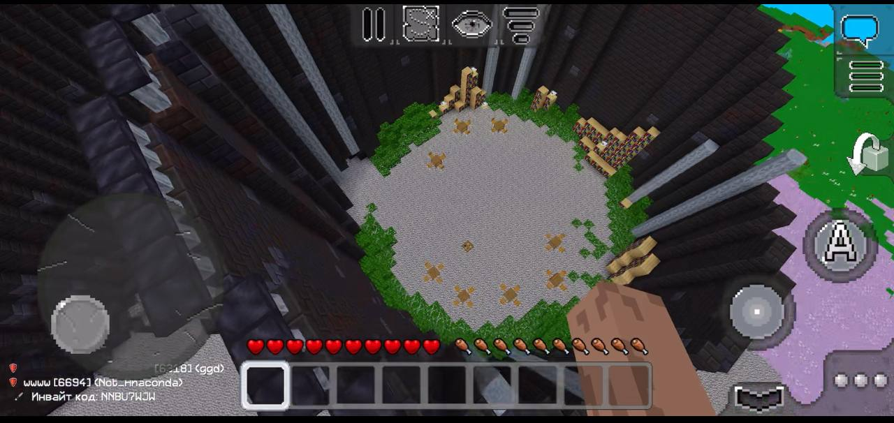

Раздел: Модераторы
Чтобы сдать модераторам, вам нужно:
- Быть на Доске почёта
- Быть выбранным модератором
- Уметь заполнять обменники

Чтобы сдать модераторам, вам нужно:
(Да, их надо соблюдать. Иначе – бан, мут, а может и шашлык из аккаунта 🥩)
Как попасть на Доску Почёта?
Чтобы оказаться на Доске Почёта, нужно:
— Соблюдать все правила проекта.
— Помогать другим игрокам и модераторам.
Иногда проводятся выборы модераторов, а также турниры, где можно проявить себя и сдать модераторам.
Если вы есть на доске почета, то вы можете получить кличку и 2 привилегии
если что тут что то есть..
Тут не все бывшие модераторы:
спавен строил Администратор сервера:
PVP-аренау строил Администратор сервера:


 

 

 

 
